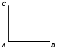
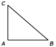

Беседа 3129 от 3877 · Беинса Дуно
Дайте свобода!
Сряда, 5 ч сутринта
(Лека мъгла. Небето покрито.)
„Отче наш“
„В начало бе Словото“
Кое е онова, което ви не достига? Може нещата да не достигат. Трябва ли да достига човек нещата? Кое трябва да достигне? Понятието „постигане“, „постижение“ отчасти ги разбираме. Ние се радваме на това, което сме постигнали. И като го изгуби, после скърби заради него. Най-първо трябва да се разбират основните неща. Трябва да разбира човек закона на своята глава, основните закони, по които главата е построена; основните закони, по които са построени дробовете, стомахът.
Нам не е важна канализация, през който водата минава през кюнеца. Всички страдаме от своите канализации. Защото в канализациите се набират много утайки, нечистотии. И човек си има канализации. Ние често страдаме от тях. Нашата нервна система е една канализация. Симпатичната нервна система е друга канализация, но която вие даже не подозирате. Вие седите и искате да бъдете щастливи, здрави, умни, богати, силни. Всичко това, което желаете, е на мястото си. Лошото седи в това, че това, което искаме, не го искаме навреме: или го искаме преждевременно, или пък след като се мине време. Там е всичката погрешка.
Човек вече трябва да гледа трезвено на работите, да ги разбира просто и ясно. Всички онези неща, които стават в света, са неразбраните. Неразбраните работи смущават.
Едни от вас сте мъже, а пък други сте жени. Мъжете се смущават от жените и жените от мъжете. Защо? Неразбрана работа е това. Мъжете и жените се смущават от децата. И това е неразбрана работа. Учителите се смущават от учениците, а пък учениците от учителите. Учителите се безпокоят, че не ги разбират учениците. Много учители има, които не разбират учениците; и ученици има, които не разбират учителите. Никой ученик не е роден математик. За него математиката е отвлечена работа и той не я разбира. А пък учителят се безпокои, че ученикът не разбира. Ти искаш да бъдеш щастлив и не знаеш защо искаш да бъдеш щастлив. Или искаш да бъдеш богат, но не знаеш защо искаш да бъдеш богат. Материалното богатство трябва да се предшествува от ред други положения. Та, изведнъж не можеш да бъдеш материално богат. Или изведнъж не можеш да бъдеш набожен. Някой иска да бъде набожен, религиозен. Ти в този живот не може да бъдеш религиозен, набожен. Ако искаш сега, то е изгубена работа! Ако сега искаш да бъдеш набожен, ти си закъснял, пресрочил си. Нали някой пресрочва даждията. Или искаш сега да бъдеш учен – пресрочил си, ако сега искаш. Трябва да носиш нещата със себе си.

Ти си религиозен истински, когато си религиозен при всички условия и не изгубваш религиозността. А пък ако станеш нещо и после го изгубиш, то не е твое. Същественото е, че вие имате един ум, който трябва да мисли, едно сърце, което трябва да чувствува, и една воля, която трябва да изпълнява нещата.
Пита някой: „Какво трябва да се прави?“ Не е лесно да се отговори. Да вземем думата „правда“. Вие казвате: „Трябва да има правда в света.“ Кое е правото сега? Правото на вълка не е правото на овцата. И правото на овцата не е правото на тревата. Правото на водата не е право на въздуха и правото на въздуха не е право на светлината. Правото на светлината не е право на тъмнината. Кое е правото сега? Вашето право е ваше право. То не обгръща всички. За днес има някои неща, които са наложени на вас. Искате едни работи. Искате и учен да сте, и религиозен да сте, какъвто и да сте, има една работа, наложена на вас: тя е, че трябва да ядете. Вие може да сте свършили 4 факултета и животът ще ви накара да ядете. И ще ядете така, както малки деца ядат, по същия начин. 4 факултета сте свършили и седнеш, и си кривиш устата, както правят малките деца. Учените хора ядат и си мислят за своите научни изобретения; детето яде и си мисли за своите играчки. И двамата, като ядат, яденето от устата отива на същото място.
Питам: Тази работа, която извършваме – яденето, за кого е? Когато пчелите събират мед от цветята, за кого е този мед? Той е колективен. Нито една пчела не събира мед за себе си. Всяка пчела, каквото вземе от цветята, го туря в килийките. И другите пчели събират там. Колко пчели може да има в един кошер? Най-малко 30 хиляди пчели трябва да има един хубав кошер. Едно общество от 30 000 същества.
Има кошери от 40 000, 50–60 000 пчели. И всички те имат само една царица и я слушат. Докато тя е в кошера, всички я слушат. Но не ѝ правят почест, не ѝ се кланят, но тази царица върши най-голямата работа. В 24 часа снася 2000 яйчица, учени яйца. Знаете ли каква работа е това? 2000 яйца за 24 часа! Пчеларите разправят това, като че ли това е в реда на нещата. Но човек трябва да стане пчелна царица, за да знае какво ѝ коства, за да ги снесе. И понеже тя върши една работа, която другите не могат да свършат, всички я уважават и тя вдъхновява работниците; въодушевява и бръмбарите – търтеите. Много лошо име са турили на търтеите. Думата „бръмбар“ донякъде е добра – значи бръмчи. Но думата „търтей“ не е толкова добра. А пък те са музиканти! Те са аристократическото общество в кошера. Първокласни барони, графове, князе, които седят и само излизат да инспектират. Излизат с бръмчение, обикалят и пак назад. Инспектират само. Когато годините станат гладни, работниците изпъждат бръмбарите навън, не ги пущат, не им дават да ядат. Това е вече едно неестествено положение. Щом един кошер изпъжда князете си, положението на кошера не е хубаво. Не се радвайте на един кошер, който изпъжда своите графове и барони.
Та казвам: Ако ти в себе си почваш да изпъждаш хубавото навън, тогава положението не е хубаво. Бръмбарите са онеправдани, а пък и те вършат една работа, която пчеларите даже не подозират. Здравословното състояние на кошера зависи от бръмбарите. Работата на царицата зависи от бръмбарите. Бръмбарите като си заминат, осакатяват се работите. Пчелите си имат известни капани да ги хващат и да ги избиват.
Та казвам: Ако вие изучавате един кошер, историята му: преди колко хиляди години пчелите се научиха как да се организират и живеят? Доста учени са тези пчели. Пчелите знаят каква храна да дадат на една личинка, за да се развие царица от нея. Една личинка, за да стане царица, трябва да се храни със специална храна. И един работник, за да стане работник, и то способен работник, трябва да се храни още като личинка със специална храна. И тези личинки, които ще станат на бръмбари, се хранят със специална храна. Работниците, царицата и бръмбарите са направени чрез специална храна.
Сега по аналогия казвам: Една дадена мисъл произтича от известна клетка. За да развиеш известни мисли, чувства, постъпки, добродетели, трябва да се хранят клетките със специфична храна. Клетките на мисълта ще храниш със специална храна; и клетките на чувствата трябва да се хранят със специфична храна; и клетките на човешките постъпки трябва да се хранят със специфична храна. Всичкото седи в избора на тази храна. И тогава ние можем да използуваме външните условия.
Най-първо, трябва да изучавате себе си, да имате едно вътрешно разположение. Може да имаш едно разположение, което зависи от хората. То се мени. Имаш едно разположение, което зависи от времето. Например вие много пъти сте разположени, понеже времето е разположено и много пъти сте неразположени, понеже времето не е разположено. Щом времето стане мрачно, и вие сте мрачни; и щом времето стане светло, и вие сте светли. Щом дойде пролетта – април, май, всички започват – и птички, и хора – гугуцат си. Един цял месец всички си гугуцат. Тогава в природата има едно любовно течение. И всички, като влязат в това течение, и млади, и стари, се подмладяват. Като минат тия месеци, всичко дойде пак до обикновеното състояние. Къде седи човешката разумност? Лятно време е много добре – топло е отвън, но зимно време, когато отвън е 25 градуса студ, как сте? Когато е топло, сте добре. А при студа? Сега няма 25 градуса студ, но 10 градуса. Тогава ще трябва да знаеш как да отопляваш своята стая.
Някои имат прекомерно големи желания. В турско време един турски паша посетил едно село във Видинско, или в Дели-Орманско, и останал много доволен от селяните. Те му дали много добър прием и той, в знак на признателност, им подарил един слон. След 5–6 години селяните обеднели, като хранили слона. И се чудили какво да го правят. А пък не могат да го продадат, не могат и да го оставят и да умре. Пашата среща един жител от селото и го пита: „Доволни ли сте от слона?“ Селянинът отговорил: „Много сме доволни! Откак дойде, всичко ни тръгна наред.“ Пашата казал: „Да ви изпратя още един!“ Та, като чули селяните, че още един слон иде, някои почнали да бягат от селото.
Та казвам: Този пример пояснява, че в човек има такива желания, които приличат на слон! За един слон трябват 75 килограма ориз на ден. Понеже оризът се продава 16 лева килограма, то 75 килограма ориз струват 1200 лева на ден. Почтена заплата на един слон. Селяните не знаели как да употребяват слона. Ако беше в Индия, щяха да го турят на работа.
Ако не впрегнем ума си на работа, този ум ще ни създаде мъчнотии. И ако не впрегнем сърцето си на работа – също така. Не разбирайте думата „впрегнем“ в отрицателен смисъл. Ако не знаем как да се отнасяме с ума си и със сърцето си, ще имаме противоречия. Ние нямаме обхода към ума си, към сърцето си и към волята си и вследствие на това сме в едно противоречие.
Най-първо, един ученик трябва да има обхода към ума си, понеже това е една дар, дадена от Бога. Без ум човек няма да има това положение, което сега заема.
Ти имаш една мъчнотия – тази мъчнотия ще я разрешиш с ума си. И каквито мъчнотии имате в света, вие ще ги разрешите с ума си. Има правила, по които мъчнотиите могат да се разрешават.

Вашият ум трябва да повика сърцето и да почне да му разправя. Сърцето е, което не разбира работите. И всички хора в света се спъват от амбициите на сърцето. Сърцето изисква нещата наготово да му се дадат. Ние искаме да живеем охолно, да нямаме никакви страдания. И съвременните народи създават своето нещастие, като искат да забогатеят, да станат силни, да уредят работите си. И създават войните, които сега съществуват. Те са създадени на икономическа почва. Това не е резултат от сегашния живот. Този ред е откак светът вече съществува. От своето неразбиране хората са дошли до сегашното противоречие.
И ние, като не разбираме какво е нашето предназначение, ние сме в стълкновение със себе си и с окръжающите. Някой път дойде в нас безверието и казваме, че светът [не] е направен така, както трябва. Ние казваме, че светът не е създаден така, както ние мислим. Това е много право, че светът не е създаден, както аз мисля. Аз ли трябва да пресъздам света, както аз мисля? Или аз трябва да пресъздам себе си така, както е създаден светът?
Ние трябва да пресъздадем себе си! „Пресъздаване“ значи да се научим да мислим. Знаете ли колко е мъчно човек да се научи да мисли? Най-първо, човек, за да се научи да мисли, той трябва да е спокоен. Ти не можеш да мислиш, ако не си спокоен. Трябва да си съвършено спокоен. Трябва да се намериш в един свят на закони и да си спокоен. Ако не си спокоен, не можеш да мислиш. Ако се тревожиш, не можеш да мислиш. Ти ще мислиш, но с тази мисъл нищо не се постига.
И знаете ли, че много пъти ние сами си създаваме своето нещастие? Вземете един човек, който е спокоен, обмисля трезво работите. Той пише писмо и дават му това, за което пише. Друг пише писмо и не му дават. Защото той, като е писал, вложил е безпокойството си в писмото си. И като го четат другите, и те се безпокоят, хвърлят писмото и не му дават което иска. Първият е писал писмото, бил е спокоен. Тогава и тези, които го четат, са спокойни. И взимат благоприятно решение за него. Ако учителят не тури добра бележка на ученика, ученикът мисли, че учителят е несправедлив. Мислите ли, че по този начин ученикът ще получи шесторка? Имаше един математик, Белчев, във Варненската гимназия. Той казваше на учениците си: „Аз турям 6 само на себе си. А на учениците – по-долни бележки. 6 – само на учителя, а пък на вас, като ви туря 3, 4 или 5, вие благодарете, а пък ако искате 6, като станете като мене учители, тогава може да имате 6!“
Питам сега: След като получи един ученик 6, какво ще постигне? Какво ще направите с 5-орката и 6-орката? Петорките може да ги направите на сърп да жънат. А пък 6-тях може да го направите на топка. 6-те означава, че ти си земледелец, който сее жито, а пък 5-те означава това, което е узряло, да го пожънеш. Значи учителят като тури 5, иска да каже: „Онова, което съм посял, ще го пожънеш.“ Да учиш, това значи да жънеш. Знанието, което е турено от миналото поколение, трябва да го пожънем. А пък от знанието, което ние ще предадем на бъдещото поколение, те ще се ползуват.
Онова знание, което не може да ни ползува в дадения случай, е безпредметно. Ти трябва да имаш една светла мисъл в ума си. А пък тази светла мисъл се [крепи] върху две основни неща: върху твоята надежда и вяра. Те са две основни неща. Вярата ще ти даде светлина на ума, а надеждата ще ти даде топлина. След това има и други неща, които ще дойдат, други качества, които ще се явят. Като дойде тази светлина, ще ти дойдат ред способности да наблюдаваш. Най-първо ще изучаваш формите на предметите, тяхната големина, тежест, цвят; после – в какъв ред са турени. Те са елементарни работи, които трябва да изучаваш.
Ти искаш нещо да постигнеш в света. Трябва да знаеш какво значи „постигане“. Ако си роден като певец, това е една музикална способност, която се намира в съседство с математиката. И си помагат. Ти не можеш да бъдеш музикант, ако не си математик. И не можеш да бъдеш математик, ако не си музикант. Те са способности, които си помагат. Всяка една способност помага на някоя друга. Някои искат да бъдат говорители. За да бъдеш говорител, трябва да е развит центърът, който е под очите. Ако човешките [орбити] не са изпъкнали и онази част под очите не е развита, ти не можеш да бъдеш оратор, говорител. Това е една способност. Хармонично трябва да говориш. И трябва да знаеш какво да говориш. Бог е вложил доста способности в нас и доста чувства, от които можеш да се ползуваш. И ако ти не ги развиеш, не можеш да постигнеш своите желания.
Та казвам: За да постигнеш едно желание, ти трябва най-първо да бъдеш вътрешно абсолютно спокоен, да има нещо, на което да се основаваш. Отвън ще има нещо, което ще те разколебава. Вътрешната природа не е спокойна. И на това отношение човек трябва да се нагоди на окръжающата среда. Нали вашето състояние постоянно се мени. Вие трябва да спазвате тия състояния, но да бъдете спокойни. Но ако ти се безпокоиш много, това показва, че нямаш равновесие. Равновесие трябва да се добие. Не е лошото, че ти се безпокоиш. У децата, когато прохождат, има най-първо една неувереност. То стане и падне, стане и падне, плаче, пак стане и ходи, докато най-после с това усилие детето добие самоувереност, че може да ходи.
То е цяло изкуство да може да ходи човек прав. И зависи как ходиш, за да имаш успех в живота. Ако ти ходиш и биеш петите си като войник, ти войник можеш да станеш, но учен човек не можеш да станеш. В ходенето трябва да туриш най-първо стремежа да събудиш първо пръстите си, после огънатата страна на стъпалото и най-после петата. Петата означава волята, то е резултат. Най-после ще дойде волята. Най-първо пръстите – умът, после вдлъбнатата, средна част на стъпалото – сърцето и най-после петите – волята. Тя е най-накрая. Това трябва да е вътре в ума ти. Като искаш да ходиш, ти трябва да проектираш ума си, че трябва да ходиш правилно. Най-първо ще стъпиш на пръстите си, после – на средната част на стъпалото и най-после – на петата. И в сърцето си трябва да имаш това желание.
Ти вечерно време, като спиш, трябва да знаеш как да си поставиш ръцете. Децата, като се раждат, раждат се със свити ръце. Като че ще хванат света и ще го завладеят. А пък като умират, си разтварят ръцете. Ако не знаеш как да свиеш ръцете си, умът ти, сърцето ти и волята ти не действуват правилно. И следователно работите ти няма да вървят добре. Ще вървят, но ще куцат. Ако искаш да имаш характера на един гений, светия, на един добре възпитан човек, ти трябва да си вдигнеш така ръцете, че като ги вдигнеш, да ти е приятно. Има оратори, които като говорят, не знаят къде да си турят ръцете. Турят ги отзад. Вчера видях една сестра, че си турила ръцете отзад. Казах си: „Няма да ѝ върви.“ Турците, които управляваха българите, си туряха ръцете отзад и казвах: „На този народ няма да му върви.“ Не си туряйте ръцете отзад. Ти си вързан тогава, не мислиш.
Та, станете господари. Когато вземете четка в ръцете си, да можете да рисувате. Като вземете перо, да може да пишете. По някой път има цяла магия във вашата ръка. Ако има буря някой път и си дигнеш ръката нагоре, бурята ще престане. Но трябва разбиране! Вие си вдигате някой път ръцете нагоре към Бога, но защо? Ако аз се моля, ще кажа: „Господи, аз искам да бъда благороден! (Учителят посочва показалеца.) Господи, да бъда справедлив! (Средния пръст.) Господи, да обичам хубавото! (Безименния пръст.) Да зная как да се обхождам с хората! (Малкия пръст.) Господи, да зная да имам правилно отношение към Тебе!“ (Палеца.) И като събера двете ръце на едно място, ще кажа: „Господи, да ме благословиш!“
Може да те благослови да станеш поет, музикант, готвач. Готварството, то е цяла наука. Вижте как цветята приготовляват нещата; вижте как пчелите приготовляват храната – природата ги учи как да готвят. Всичко в природата си има своето място. После, вие имате очи. Гледайте красивите работи! Гледам краката на някого, който ходи, криви си краката. Защо си криви краката? В един човек не гледай неговите недостатъци, а хубавите работи в него. Всеки човек, който ходи, има хубави черти. Намерете във всеки човек хубавата поза. Всеки човек има една хубава поза. И като я намерите, почерпете поука. Не изучавайте недъзите на хората, понеже това е патология. Лекарите постоянно изучават болезнените признаци, но това не е човекът. Та казвам сега: Всинца сте станали лекари. И казвате: „Този човек има един недостатък. Този е нетърпелив.“ Какво му трябва? Търпение, търпение му трябва. Турете частицата „не“ настрана. „Не достига му търпение.“ Как ще го достигне? Той да се научи да взема последното място. Който е нетърпелив, никога да не взема първото място. Така ще се научи на търпение.
Една майка дала един съвет на своята дъщеря. Последната обичала много да се кара вкъщи. Като се оженила дъщерята, майка ѝ казала: „Когато ти говорят в къщата, където отиваш, ти да преглъщаш.“ И когато ѝ казвали нещо, тя преглъщала. Какво се постигнало с това? Постигнало се туй – тя почнала да търпи. А по-рано била много нетърпелива. Тази енергия трябва да се изразходи някъде. И като се научила да преглъща, тя си седяла спокойно. Щом научите това, и вие ще си седите спокойно.
Ще ви приведа един пример. Имало един юнак американец, който вдигал тежести. Друг американец го обижда. Юнакът се поусмихва, хваща го за краката, вдига го във въздуха, изхвърля го нагоре и пак го сваля! И му казва: „Аз ли съм баба или ти?“ Като имате една мъчнотия, хванете я за краката, вдигнете я във въздуха, обърнете я с главата надолу и после я свалете на земята. И кажи ѝ: „Аз не съм баба. Ти ще ме слушаш. Аз вървя по един доста определен път, който Бог ми е дал. И не се отклонявам.“
Търпението осмисля живота. Бог е дълготърпелив. Той вижда всички несгоди, неправди в света, но Той знае, че светът с насилие не се оправя. Ние не трябва да изнасиляме себе си. Нашите убеждения, стремежи трябва да бъдат съзидани върху закона на любовта. Всяко нещо, което правиш, трябва да го правиш съзнателно от любов. Ако ти не можеш да туриш любовта в действие, да правиш с нея всичките работи, не можеш да бъдеш търпелив. Както Бог е търпелив, така и ние трябва да бъдем търпеливи. Мъчно е търпението. Някой път се възмущавате, че не сте оценени. Питам: Хората оценяват ли Бога? Ако има Един, Който да прави добрини, това е Бог! И при това всички хора имат такова мърморене! И Той ги търпи.
Та, турете в себе си тази мисъл: не, не да бъдете дълготърпеливи като Бога, но търпеливи! Дълготърпението е само за Него! А пък ние, като постигнем търпението, доста е. То е самообладание вече на силите на ума, сърцето и човешката воля. Търпеливият човек се самовлада. Представете си, че Господ ви дошъл на гости, един цар ви е дошъл на гости. И вие него ден се изтезавате, и се разгневите и почнете да вдигате цяла врява, че ви е направена от някого една малка пакост, че не са станали нещата, както вие мислите. Седят двама души и обядват. Онзи, който е направил яденето, направил го безсолно. Един от двамата, които обядват, казва на другия: „Този, който е сготвил, направил яденето безсолно!“ А пък другият казва: „Той е оставил тази работа за нас, да го направим солено според желанието си, зависи от нас.“ И взема малко сол и туря. Ако беше солено, мъчно е да се поправи. Но ако яденето е безсолно, може да се поправи. Ако една работа не е станала, може да я изправиш. Но работа, която е станала, не можеш да я поправиш лесно. Благодарете, че работите не са станали още. При соленото ядене трябва да туриш още вода, но то е дълга работа, а при безсолното ще туриш малко сол и ще го направиш както трябва.
Всички се стремете да добиете едно вътрешно равновесие. Да имате една непоколебима вяра! Една непоколебима надежда! Едно непоколебимо търпение! Някой път, ако някой от вас иска, може да прочете една книжка от Епиктет. Не зная дали е преведена на български – „Животът на Епиктет“. Често хората се обезсърчават. Казват: „Какво ще се постигне.“ Но ако се безпокои човек, какво ще постигне?
Казват някои: „С вяра какво ще постигне човек!“ Питам: Какво ще постигне с безверие? Някой казва: „С надежда какво ще постигне?“ Питам: С обезнадеждване какво ще постигнеш? Казва някой: „Като учи човек, какво ще постигне?“ Питам: Като не се учиш, какво ще постигнеш? Като туриш ума си, сърцето си и волята си на работа, ще постигнеш. Ако не ги туриш на работа, няма да постигнеш.
Не че не сте турили вашата воля на работа. Вие всички употребявате начина на майките. У всички майки има една много голяма погрешка, която правят. Тя изглежда малка, но всъщност е голяма. Тя е, че винаги прехранва децата си. Те ще станат 5–6 пъти през нощта, за да дадат на детето си да суче. За да се оправи. А трябва три пъти: сутрин, на обяд и вечер. А през нощта веднъж да го кърми. Казваш: „Да не му стане нещо.“ Нищо няма да му стане. Птичките как възпитават децата си. Вечерно време нищо не им дават. А денем им дават. А пък майката 4–5 пъти ще стане, когато детето заплаква през нощта и ще го кърми. Детето като плаче, то е песнопоец. То като почне да си пее, нека да си пее, ще даде концерт. Ще плаче 5–10 минути и ще заспи. Имаше един доктор Дървов. Една вечер той остана да гледа детето си. Жена му отишла на увеселение, на театър, а пък той останал вкъщи. И разправя ми своята опитност. Като се разплакало това дете! Казва: „Носих го 1–2 часа, не млъква. Прочетох молитвата „Отче наш“, колкото я знаех, и казах: „Елате, помогнете“, духовете да помогнат. И като повиках тях, то утихна. Заспа. И разбрах едно нещо, което дотогава не разбирах. Като развеждах детето из стаята, какво ли не му давах, то не слуша, а плаче.“ Аз казах на доктор Дървов: „То е било един песнопоец. Дало е един концерт.“
Имате една мисъл, която ви безпокои. Дайте ѝ съответни условия. Имате едно желание – не спирайте желанието си. Правите една погрешка. Вие казвате: „Това не е възможно.“ Така казвате за нещо. Кажи: „Възможно е. Ще стане това!“ Дайте ход на вашето желание и оставете. Дойде друго желание. Ти казваш: „Това не може, онова не може“ и най-после се подпушваш, и човек така се подпушва. Дайте ход на вашите желания. Или дойде някоя мисъл. Поработете върху нея. Искаш да попееш. Попей си малко. Не казвай: „Аз не съм певец.“ Ако искаш да се упражняваш, упражни се малко, стани и направи упражнението. Вечерно време не можеш да спиш. Стани, направи известно упражнение и ще се събуди умът ти и това неразположение ще изчезне.
Та казвам: Вие сте дошли до една област, дето ще ви трябват много малки неща, за да се поправи животът ви. Как бихте ми изпели сега думата „правда“? Как бихте ми превели „правда“? Нали всички хора искат правда? Симеоне, я изпей думата „правда“, ти си музикант. Музиката е само за да даде израз на нещата. Правдата си има особен ритъм. Двете съгласни П и Р показват следното: П показва едно състояние, дето плодовете зреят; Р показва едно състояние, дето силите са компенсирани. А показва начина как да отваря ръката си.
(Учителят пее думата „правда“ и всички пеем с Него.) Ти си неразположен. Изпей „правда“ няколко пъти. Това разрешава въпроса. Сега сърцето разрешава. То го усуква, извива го. А трябва при разрешението да вземе участие и умът. Я изпейте думата „правда“ тихо. Във всяка една дума има мощна сила. В думата „правда“, думата „любов“ трябва да се намери силата. Всяка една дума е магическа сила. Думите са магически сили. И трябва да почнем да разбираме магическия смисъл на думите. И тогава всяка една дума може да ни помогне. Не е в много говорене. Ние, съвременните хора, много говорим, малко вършим. Всички съвременни хора сме силни в рушението. В това сте много майстори. Всеки в рушенето е силен. Но всички сте слаби в творчеството, в съграждането. (Учителят и всички пяхме „правда“ няколко пъти. Изпя се по два начина: първо без извивки, а второ – с извивки.) Първият начин е пеене с ума, а вторият – със сърцето. С ума лесно става. А със сърцето се върти много. Някой път си неразположен – изпей думата „правда“ няколко пъти.
Дайте свобода на ума си; дай свобода на сърцето си! Дайте свобода на волята си! Това е възможно. Всеки да си даде свобода така, както мисли, така, както чувствува и така, както постъпва. И да не се безпокои.
„Добрата молитва“
6.32 ч сутринта
(На поляната направихме упражненията.)
ХIХ година (1939–1940)
12-а школна лекция на Общия окултен клас,
държана от Учителя на 20 декември 1939 г.,
София – Изгрев.